Alberobello, Matera, Polignano a Mare, Monopoli y Locorotondo
Puglia es una de las regiones más auténticas y fascinantes del sur de Italia. Conocida como el "tacón de la bota italiana", esta tierra ofrece una combinación única de paisajes rurales, pueblos blancos, playas de ensueño, trulli (casas cónicas) y una gastronomía excepcional.
En esta ruta de 8 días recorreremos los pueblos más bonitos de Puglia: Alberobello (famoso por sus trulli, Patrimonio de la Humanidad), Polignano a Mare (con sus acantilados y aguas turquesas), Monopoli (un puerto pesquero con encanto), Locorotondo (el pueblo redondo de la Murgia) y la cercana Matera (la ciudad de los Sassi, Patrimonio de la Humanidad). Alquilar un coche es imprescindible para recorrer el Valle de Itria y descubrir estos pueblos con libertad.
---Mi recomendación personal es alojarse en Alberobello si quieres la experiencia de dormir en un trullo. Si buscas playa y acantilados, elige Polignano a Mare (pero es caro). Para una experiencia más auténtica y económica, Monopoli o Locorotondo son excelentes opciones. Matera merece al menos una noche (es mágica al atardecer).
🚗 Coche en Puglia: Es ABSOLUTAMENTE IMPRESCINDIBLE. Los pueblos están dispersos en el Valle de Itria y las distancias son grandes (Alberobello → Polignano: 25 min, Alberobello → Matera: 1h). Sin coche, no podrás ver nada. Reserva con antelación.
🏠 Alternativas: Los trulli son la experiencia más auténtica. Muchos son apartamentos turísticos (Airbnb). También hay masserias (casas rurales fortificadas) para una experiencia de lujo.
🚫 Zonas a evitar: Puglia es una región segura, pero evita caminar solo por la noche en las afueras de Bari. En los pueblos turísticos, cuidado con los carteristas en temporada alta.
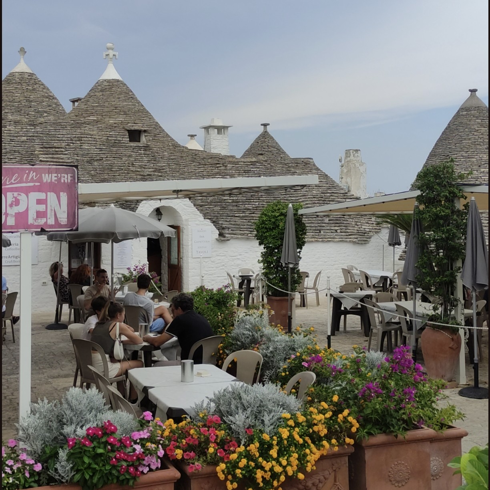
Alberobello es famoso en todo el mundo por sus trulli, casas blancas con tejados cónicos de piedra seca (sin cemento). Son Patrimonio de la Humanidad por la UNESCO. El barrio de Rione Monti tiene más de 1.000 trulli apiñados en calles empinadas, llenos de tiendas de souvenirs y restaurantes turísticos. El barrio de Aia Piccola es más auténtico y menos masificado, con trulli que aún son viviendas particulares.
Puedes visitar un trullo museo (entrada 2-3€) para ver cómo se vivía en el siglo XIX. El Trullo Sovrano es el único trullo de dos pisos. La iglesia de Sant'Antonio también tiene forma de trullo.
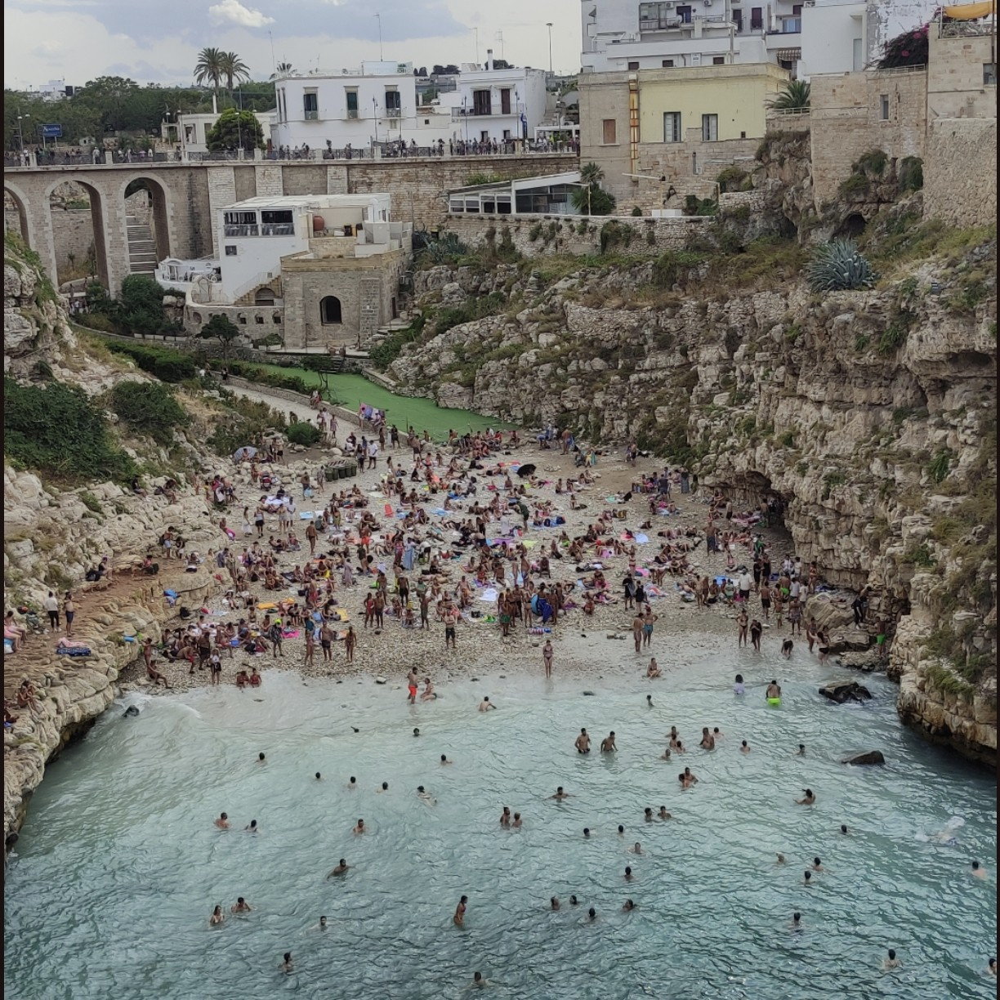
Polignano a Mare es uno de los pueblos más bonitos de Italia. Está construido sobre un acantilado de piedra caliza blanco, con vistas al mar Adriático. Las casas blancas cuelgan sobre el agua, creando un paisaje espectacular. La playa más famosa es Cala Porto (Lama Monachile), una pequeña cala entre dos acantilados.
El puente del acantilado es el lugar más fotografiado. El Balcón de la Música (Terrazza Santo Stefano) ofrece vistas espectaculares. El centro histórico es un laberinto de calles estrechas con tiendas de artesanía y restaurantes.
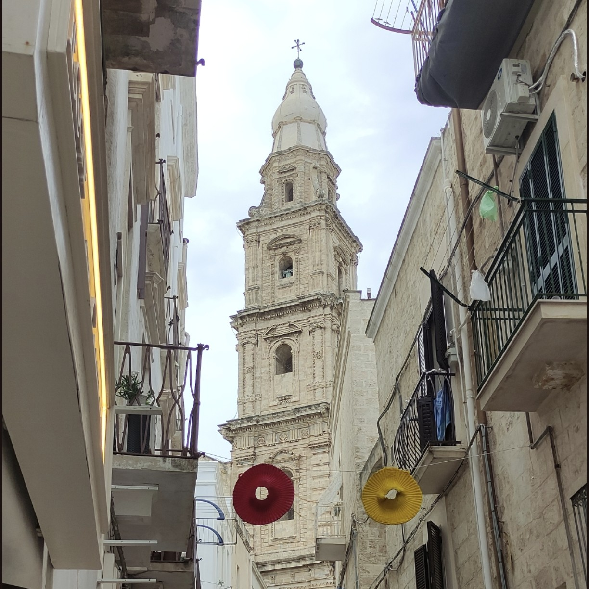
Monopoli es un encantador pueblo pesquero con un puerto histórico lleno de barcos de colores. Es menos turístico que Polignano y más auténtico. El casco antiguo está rodeado por murallas del siglo XVI. La Catedral de María Santísima de la Madia es barroca y muy bonita. El Castillo de Carlos V se asoma al mar y se puede visitar (entrada 5€).
El puerto es el lugar más animado, con restaurantes de pescado fresco. Las playas de arena (Cala Porta Vecchia, Cala Paradiso) son ideales para familias. El centro histórico es un laberinto de callejuelas blancas, perfecto para perderse.
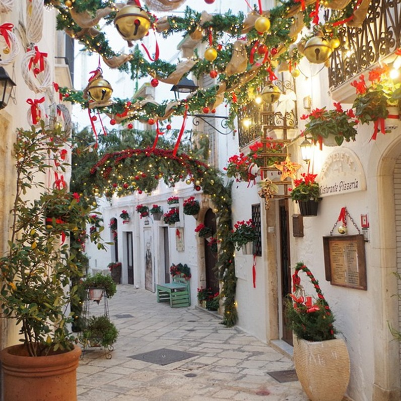
Locorotondo ha sido galardonado como "uno de los pueblos más bonitos de Italia". Su nombre significa "lugar redondo" por la forma circular de su casco antiguo. Las casas son blancas y las calles forman un círculo perfecto alrededor de la iglesia matriz. Es mucho más tranquilo y auténtico que Alberobello.
La Iglesia Matriz de San Giorgio es barroca y tiene un campanario de 50 metros. Las calles circulares son perfectas para pasear sin rumbo. El mirador de la Largo Vittorio Veneto ofrece vistas espectaculares del Valle de Itria, con sus viñedos y trulli salpicando el paisaje.
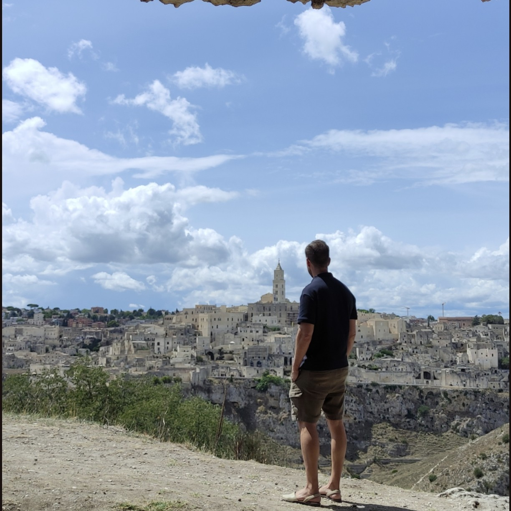
Matera está a solo 1 hora de Alberobello y es una visita imprescindible. Es famosa por sus Sassi, casas cueva excavadas en la roca que se han habitado durante más de 9.000 años (una de las ciudades habitadas más antiguas del mundo).
Los Sassi Caveoso y Sassi Barisano son los barrios de cuevas. Puedes visitar una casa cueva (entrada 3-5€) para ver cómo se vivía. La Catedral de Matera (del siglo XIII) se asoma sobre los Sassi. La iglesia de Santa María de Idris está excavada en la roca. El mirador de la Murgia Materana ofrece las mejores vistas de la ciudad. Matera es mágica al atardecer, cuando las cuevas se iluminan.
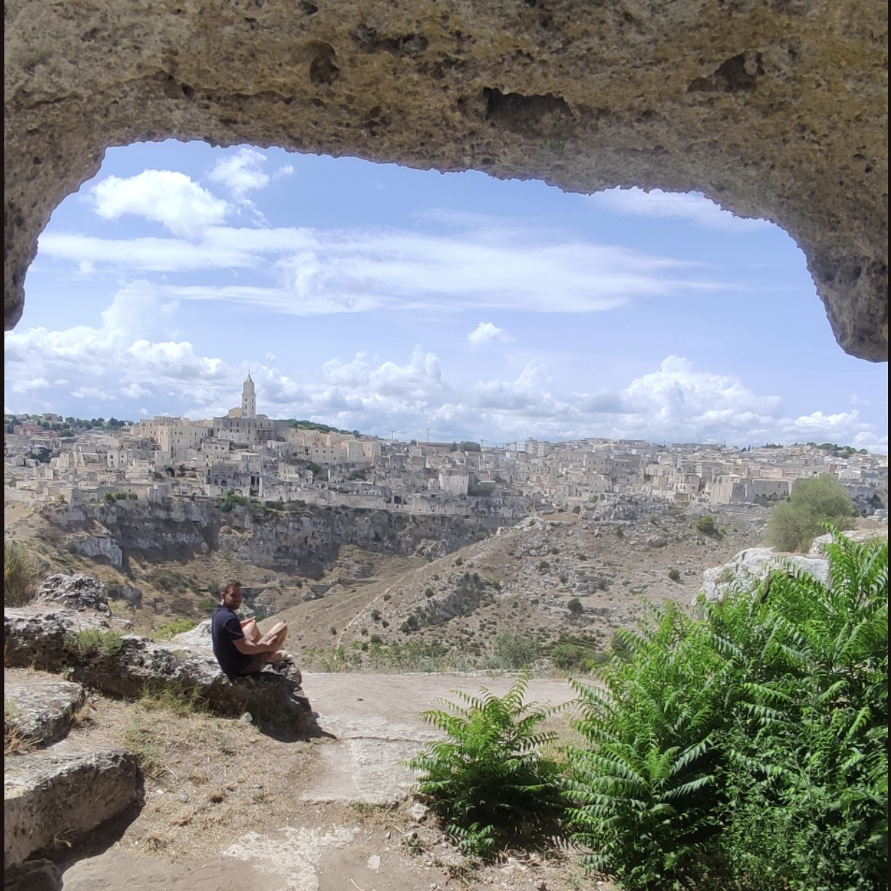
Para entender cómo se vivía en los Sassi de Matera, hay que visitar una casa cueva museo. La más famosa es la Casa Grotta di Vico Solitario (entrada 3€), una cueva restaurada que muestra las condiciones de vida de los campesinos hasta los años 1950.
También se puede visitar el Museo della Civiltà Contadina (Museo de la Cultura Campesina). Otras cuevas interesantes son la Casa Grotta del Casalnuovo y la Chiesa rupestre di Santa Maria de Idris (iglesia excavada en la roca). Es una experiencia fascinante para entender la historia de Matera.
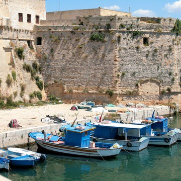
Gallipoli es una de las ciudades costeras más bonitas de Puglia. Su nombre significa "ciudad hermosa" en griego. Está dividida en dos partes: el casco antiguo (centro storico), situado en una isla conectada por un puente del siglo XVII, y la zona moderna en el continente.
El castillo aragonés (Castello di Gallipoli) del siglo XIII es impresionante. La Catedral de Sant'Agata (barroca) es espectacular. Las calles estrechas del casco antiguo están llenas de tiendas de artesanía, restaurantes de pescado y bares. Es famosa por su langosta y sus atardeceres.
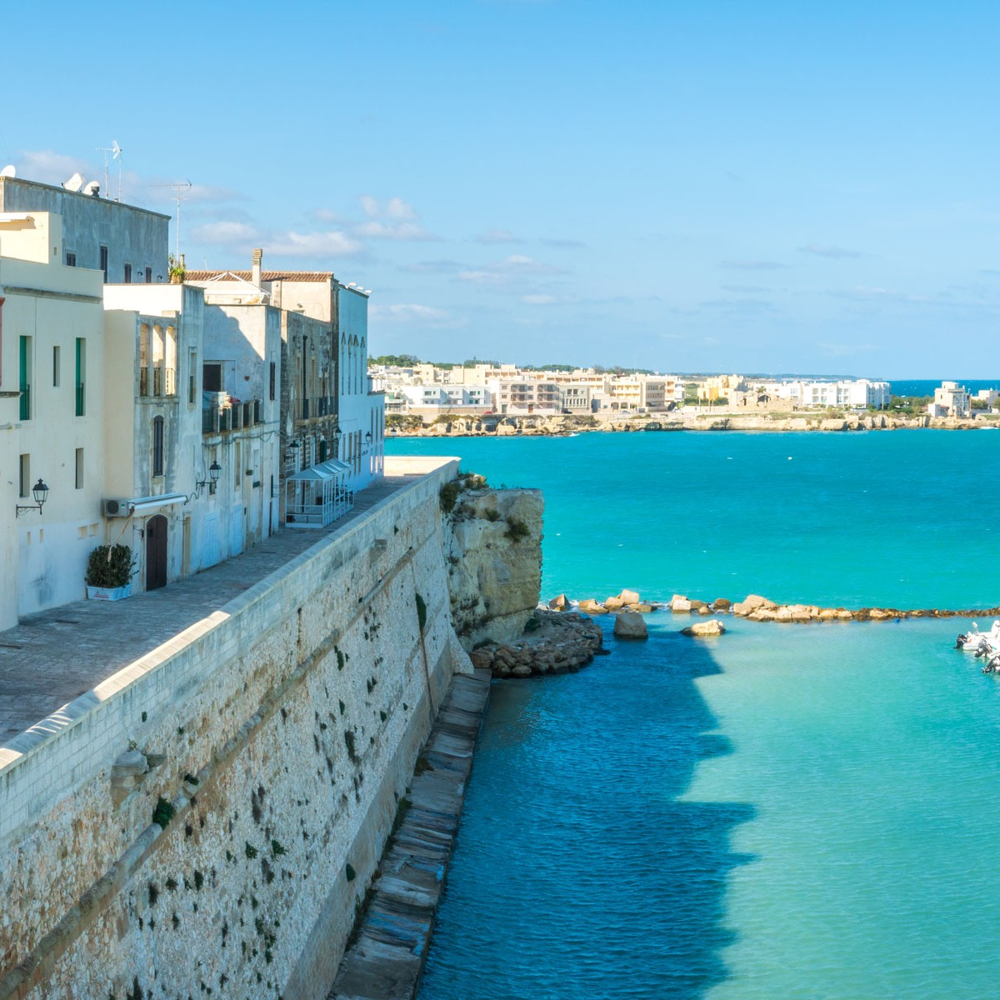
Otranto es una ciudad costera en el extremo este de Puglia, conocida como la "puerta de Oriente". Su Catedral de Santa María Annunziata (siglo XI) tiene un impresionante mosaico de pavimento del siglo XII, que representa el Árbol de la Vida y escenas del Antiguo Testamento (es uno de los mosaicos más grandes de Europa).
El Castillo aragonés (Castello di Otranto) fue reconstruido por Fernando el Católico. El casco antiguo está rodeado de murallas. La playa más famosa es Porto Badisco (una cala de guijarros). El Faro de Otranto tiene vistas espectaculares.
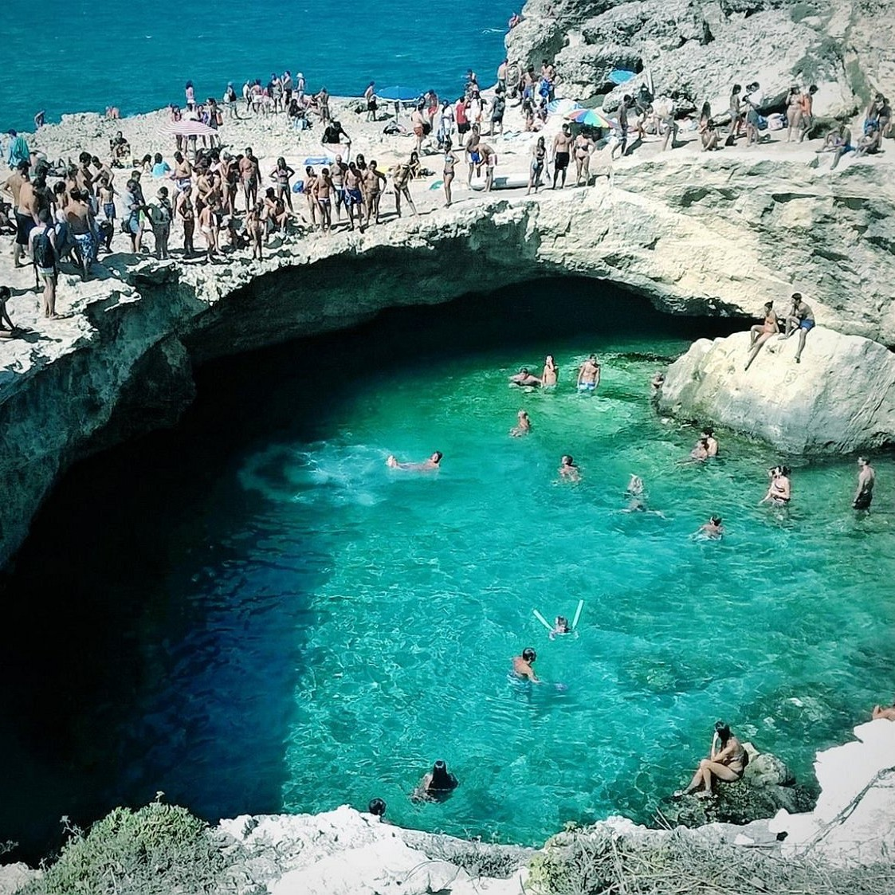
La Grotta della Poesía (Cueva de la Poesía) es una piscina natural de agua turquesa y cristalina situada en la costa adriática, cerca de Roca Vecchia (entre Lecce y Otranto). Es una de las piscinas naturales más famosas de Italia. Se trata de una cueva kárstica de techo derrumbado, que forma una piscina natural de unos 20 metros de diámetro.
El agua es salada y cristalina, y se puede nadar, hacer snorkel o saltar desde las rocas (hay una plataforma de salto de unos 6 metros). El nombre proviene de una leyenda: una poetisa se bañaba aquí y escribía versos en las paredes.
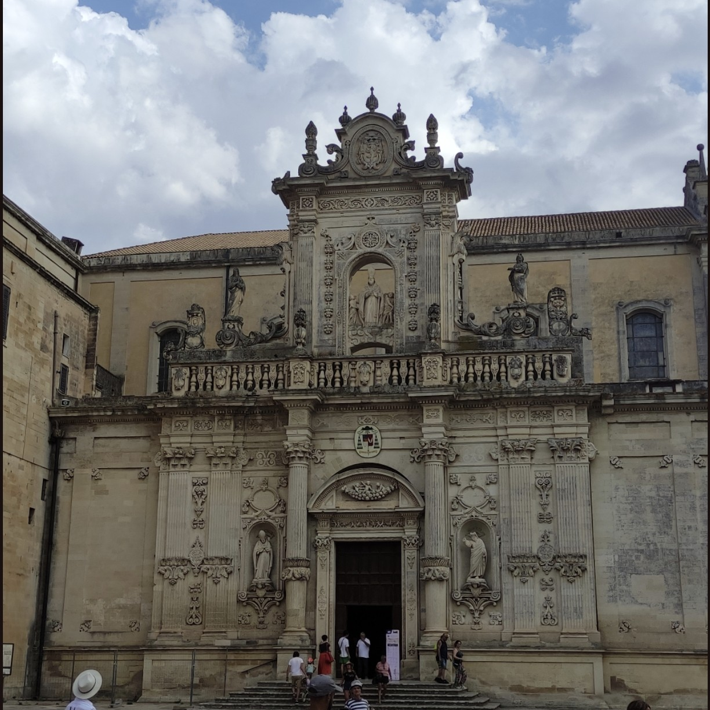
Lecce es conocida como la "Florencia del Sur" por su impresionante arquitectura barroca. El centro histórico es un museo al aire libre, con fachadas decoradas con figuras mitológicas, animales y flores talladas en la piedra leccese (una piedra caliza blanda y dorada). Es una de las ciudades más bonitas de Puglia.
Los monumentos imprescindibles son: la Basílica de Santa Croce (el mejor ejemplo del barroco leccese), la Plaza del Duomo (con la Catedral de la Asunción y el campanario), el Anfiteatro Romano (siglo II d.C.), la Porta Napoli y el Castillo de Carlos V.
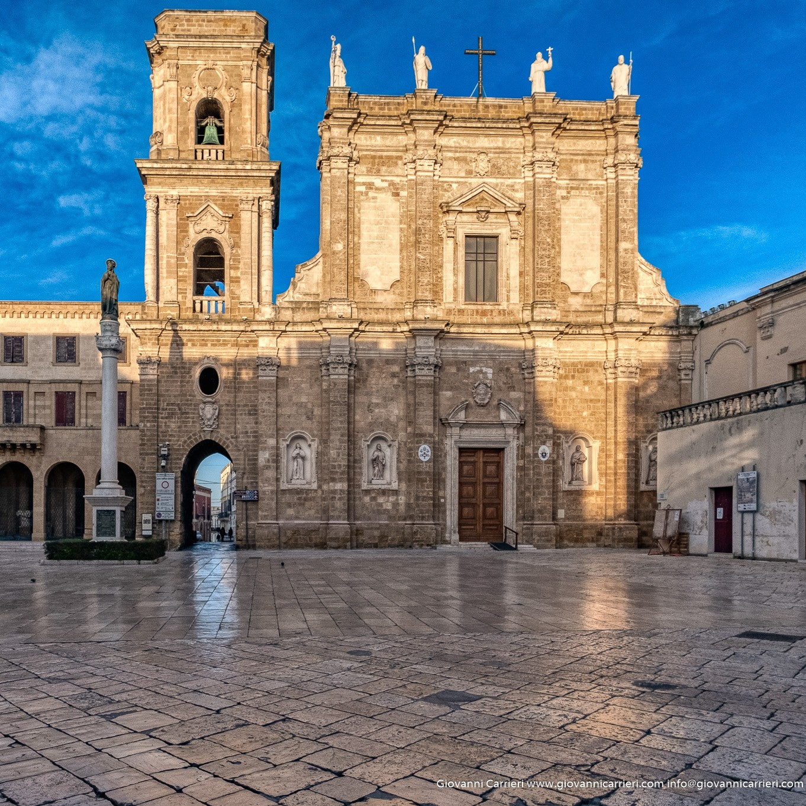
Brindisi es una ciudad portuaria en la costa adriática, con un puerto natural que ha sido utilizado desde la época romana. Es el final de la Vía Appia (la calzada romana que conectaba Roma con el este). El símbolo de la ciudad son las dos columnas romanas (una de ellas tiene una réplica de la otra, que está en Lecce).
Otros lugares de interés son: el Castillo Svevo (castillo suabo del siglo XIII), la Catedral de Brindisi (románica), el Templo de San Giovanni al Sepolcro (iglesia redonda de los Caballeros Templarios) y el Paseo marítimo.
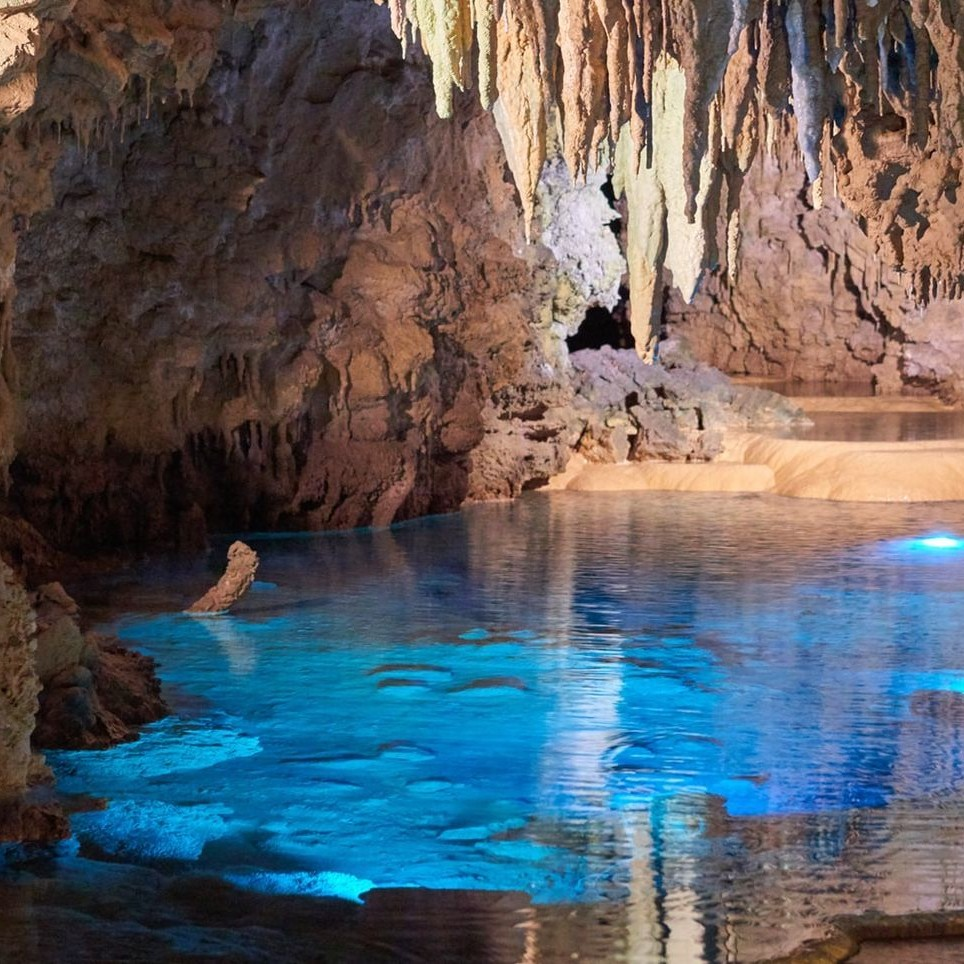
Las Grotte di Castellana son un impresionante complejo de cuevas kársticas subterráneas situado en Castellana Grotte, a unos 40 km de Bari. Fueron descubiertas en 1938 y son una de las atracciones naturales más importantes de Puglia. Tienen más de 3 km de longitud y una profundidad de 70 metros.
La visita guiada (1 hora) recorre las salas principales, incluyendo la Gruta Blanca (completamente blanca, formada por estalactitas de aragonito), la Gruta de las Maravillas y el Cañón (una sima de 70 metros de profundidad).
Planifica bien las distancias: Alberobello → Polignano (25 min), Alberobello → Matera (1h), Alberobello → Locorotondo (10 min), Alberobello → Monopoli (20 min). Recomiendo alojarse en Alberobello o Locorotondo para explorar el Valle de Itria, y dedicar un día entero a Matera.
La mejor forma de recorrer los pueblos es en coche. Hay aparcamientos disuasorios en las afueras de todos los pueblos (gratuitos o de pago). Lleva calzado cómodo (calles empinadas y adoquinadas).
{kind=link}
{kind=link}
{kind=link}
{kind=link}
{kind=link}
{kind=link}
{kind=link}
{kind=link}
{kind=link}
{kind=link}
{kind=link}
{kind=link}
{kind=link}
{kind=link}
{kind=link}
{kind=link}
{kind=link}
{kind=link}
{kind=link}
{kind=link}